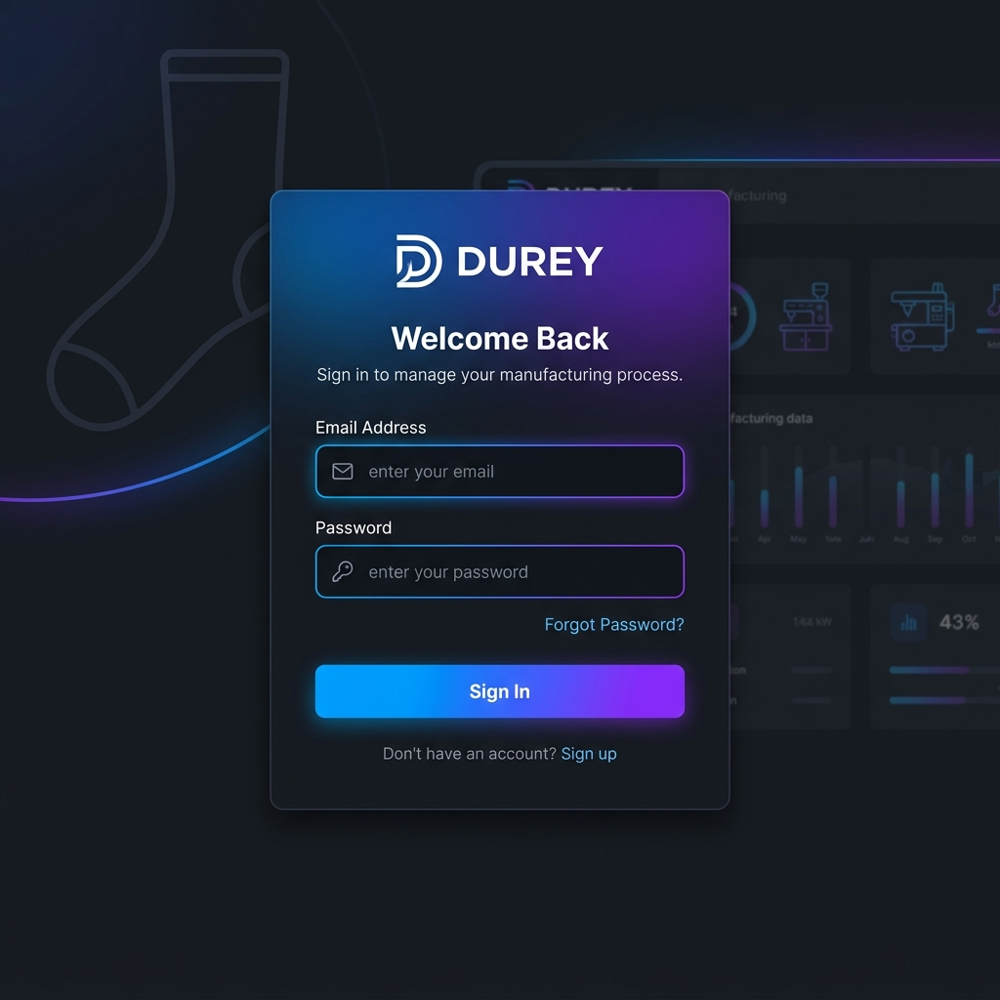
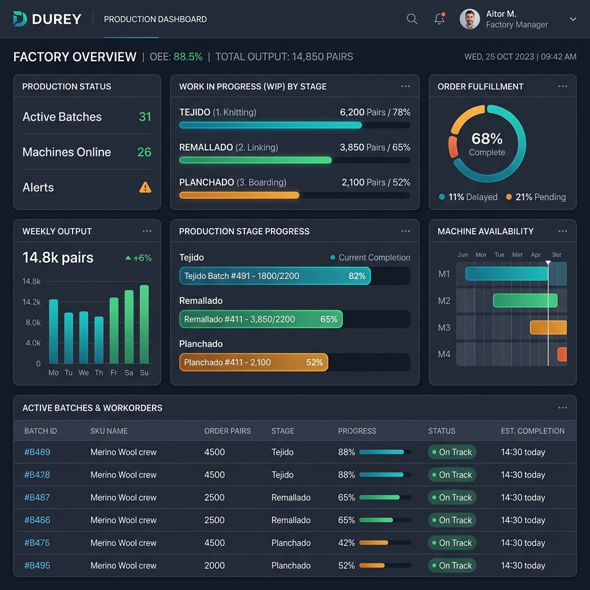
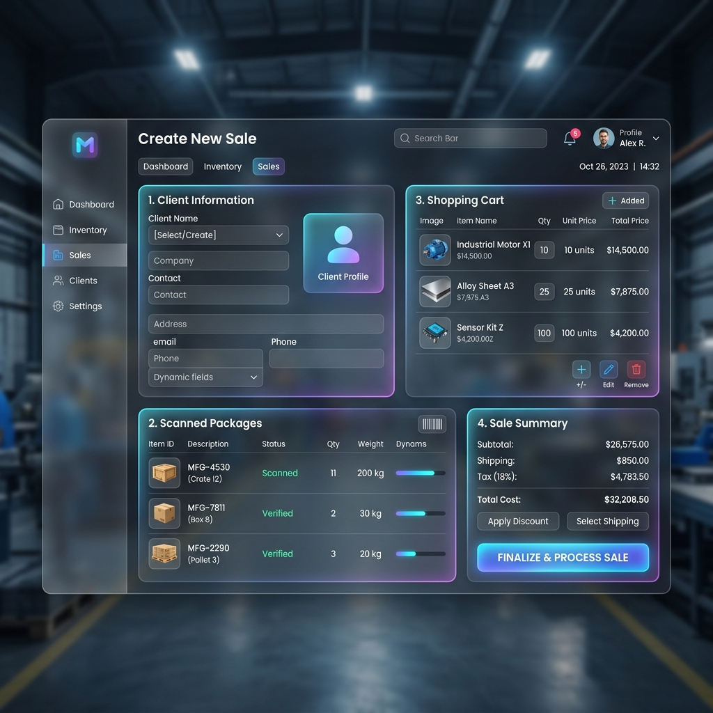

MANUAL DE USUARIO
Sistema de Control de Producción y Ventas DUREY
Un manual sencillo y didáctico para configurar y operar tu fábrica de medias de manera digital.
Introducción al Sistema DUREY
El Sistema de Control DUREY es una herramienta digital diseñada para supervisar todo el ciclo de fabricación y comercialización de medias en tu planta. El sistema conecta los departamentos de Tejido, Remallado, Planchado, Empaque, Almacén y Ventas en una sola plataforma en tiempo real.
El Flujo de Trabajo en la Fábrica
El sistema sigue la secuencia lógica de producción de la fábrica de forma automatizada:
1. Tejido: Se planifican los turnos y se tejen las medias base, las cuales se acumulan en Minidepósitos.
2. Remallado (Enlace): Se toman docenas de los minidepósitos y se remalla la punta de las medias. Al completarse, pasan directo al Stock Listo para Planchar.
3. Planchado: Se procesa el stock y se detectan prendas defectuosas, enviando el producto limpio a empaque.
4. Preparado (Empaque): Las medias se agrupan en docenas y se rotulan con Códigos de Barras (PKG-XXXX), ingresando formalmente como inventario en el Almacén.
5. Ventas y Despacho: Se venden los paquetes terminados y se facturan mediante cobros en caja.
---
Capítulo 1: Primeros Pasos y Configuración Inicial
Antes de que los trabajadores registren producción, el Administrador debe configurar los datos iniciales o "Tablas Maestras".
Paso Clave: Para configurar el sistema debes iniciar sesión con un usuario con el rol de Administrador General.
1. Inicio de Sesión
Para acceder al sistema:
1. Abre tu navegador e ingresa a la dirección web provista.
2. Coloca tu correo electrónico (ej:
admin@durey.com) y tu contraseña en la pantalla de bienvenida.
3. Haz clic en
Sign In.

2. Registrar al Personal (Usuarios)
Para dar de alta a tus empleados y asignarles permisos:
1. Ve al menú
Personal en la barra lateral izquierda.
2. Haz clic en el botón
Agregar Usuario (o botón "+" de registro).
3. Rellena los datos básicos: Nombre completo, correo electrónico y selecciona el
Rol:
| Rol | Función en el Sistema | Permisos |
| :--- | :--- | :--- |
| Administrador | Dueño o Gerente general | Acceso total a reportes, auditorías, compras y personal. |
| Supervisor | Encargado de planta | Crea los turnos, asigna los lotes a los operadores and revisa el stock. |
| Operador | Trabajadores de las máquinas | Registran su producción diaria desde su estación. |
| Vendedora | Área comercial | Registra ventas, clientes, cobros de dinero y guías de entrega. |
| Técnico | Soporte de maquinaria | Revisa y soluciona averías reportadas por los operadores. |
4. Marca la casilla Activo y haz clic en Guardar.
3. Registrar las Máquinas
Para llevar el control del estado y mantenimiento de los equipos:
1. Ve a
Máquinas en el menú.
2. Primero registra las marcas de tus equipos en
Marcas (ej: Lonati, Sangiacomo).
3. Luego haz clic en
Agregar Máquina:
* Escribe el
Código identificador (ej:
TEJ-01 para tejedora 1,
REM-01 para remalladora 1).
* Selecciona el
Tipo (Tejedora o Remalladora).
* Asigna la marca correspondiente.
4. Al crearse, la máquina quedará en estado
Activa lista para trabajar.
4. Configurar el Catálogo de Medias
El catálogo contiene los tipos de medias que fabrica Durey y define sus precios de venta.
1. Ve al menú
Catálogo.
2. Haz clic en
Agregar Media e ingresa la descripción del producto:
*
Modelo: Ej: Tobillera, Escolar, Vestir.
*
Público: Ej: Niño, Caballero, Dama, Bebé.
*
Diseño / Color: Ej: Blanco Liso, Rayas Rojas, Rombos.
*
Talla: Ej: S, M, L o Única.
*
Precio de Venta: Costo en Soles por docena (ej:
25.50).
3. Haz clic en
Guardar. El sistema autogenerará un
SKU y un código único para que sea fácil identificar este producto en el almacén y en las ventas.
---
Capítulo 2: El Ciclo Diario de Producción
Una vez configurado el Personal, las Máquinas y el Catálogo, la planta puede iniciar sus actividades diarias. El supervisor cuenta con una visión general en el Factory Dashboard:

Etapa 1: Tejido (Producción Inicial)
1.
Supervisor: Entra al módulo
Tejido, va a "Planificar Turno" y crea un nuevo turno de trabajo. Asigna qué operador tejerá en qué máquina y en qué horario.
2.
Tejedor (Operador):
* Inicia sesión en su dispositivo. El sistema le mostrará el lote y máquina que tiene asignados.
* Presiona
Iniciar Carga de Lote al empezar a tejer.
* Al finalizar su jornada, ingresa las docenas tejidas reales en la pantalla y presiona
Cerrar Turno / Enviar Producción.
3.
Resultado: Las docenas tejidas se suman automáticamente al inventario de
Minidepósitos del modelo correspondiente. El operador y la máquina vuelven a figurar libres ("Disponible" y "Activa").
Etapa 2: Remallado (Cierre de Lote Atómico)
En esta etapa se cierran las costuras de las medias tejidas.
1.
Supervisor: Crea un lote de remallado asignando una cantidad de docenas desde los
Minidepósitos a una operadora en una máquina remalladora específica.
2.
Remalladora (Operador):
* Abre su pantalla de Remallado y presiona
Iniciar Lote.
* Al terminar el remallado físico, ingresa:
*
Docenas Remalladas: Cantidad total procesada exitosamente.
*
Docenas Restantes: Si quedó material pendiente para el próximo turno.
* Presiona
Registrar Producción / Finalizar Lote.
3.
Resultado: El sistema realiza una transacción atómica segura. El lote se cierra, la máquina y operadora quedan libres para el siguiente turno, y el stock de docenas avanza de forma inmediata a la lista de
Stock Listo para Planchar.
Garantía Transaccional: El cierre de lote de remallado se ejecuta en un solo paso en la base de datos. Si el guardado falla por algún corte de luz o red, no se guardará nada a medias y los operadores nunca quedarán "atascados" en estado ocupado.
Etapa 3: Planchado
Las medias remalladas deben ser planchadas para darles su forma final y realizar el control de calidad preliminar.
1.
Planchador (Operador):
* En su pantalla de Planchado, selecciona el modelo de media en el que va a trabajar. El sistema le mostrará el stock de docenas disponible acumulado en la etapa anterior.
* Al terminar la labor, registra:
*
Docenas Planchadas: La cantidad total procesada.
*
Docenas Defectuosas: La cantidad de medias que salieron rotas, manchadas o con fallas.
* Presiona
Guardar Reporte.
2.
Resultado: El stock listo para planchar se reduce y la producción apta (planchada menos defectuosa) pasa al estado "Listo para Empaque".
Etapa 4: Preparado (Empaque y Almacenamiento)
Aquí se empaqueta el producto final para su posterior venta.
1.
Preparador (Operador):
* Ingresa a
Preparado y selecciona las docenas listas.
* Agrupa las unidades en paquetes de
1 docena (12 pares).
* Registra el empaque en el sistema.
2.
Resultado: El sistema genera un
Código de Paquete correlativo (ej:
PKG-0024) y su respectivo código de barras. Las medias ingresan de forma oficial al
Almacén listas para la venta.
---
Capítulo 3: Ventas, Caja y Entrega
Este capítulo explica cómo el departamento de Ventas (Vendedora) comercializa el producto terminado en Almacén.

1. Crear una Venta
1. Ve al menú
Ventas y haz clic en
Nueva Venta.
2.
Seleccionar Cliente: Selecciona un cliente registrado o escribe el nombre y DNI/RUC de uno nuevo para guardarlo en la agenda.
3.
Añadir Productos:
* Selecciona las docenas de medias que el cliente está comprando.
* Si cuentas con una lectora de códigos de barras, puedes escanear directamente la etiqueta del paquete físico (
PKG-XXXX) para cargarlo al carrito automáticamente.
4.
Condiciones de Pago:
*
Contado: El cliente cancela la totalidad en el momento.
*
Crédito Diferido: El cliente pagará en una fecha posterior o en cuotas. Define la fecha de vencimiento y el monto.
5. Haz clic en
Confirmar Venta.
2. Apertura de Caja y Registro de Cobros
Toda entrada de dinero por ventas o cuotas debe registrarse en la caja del día.
1. Al empezar el día, ve a
Caja y haz clic en
Aperturar Caja ingresando el monto de dinero base con el que inicia (dinero en efectivo para vuelto).
2. Para cobrar una cuota de una venta al crédito:
* Busca la venta en la sección de Ventas.
* Haz clic en
Registrar Cobro.
* Ingresa el monto pagado por el cliente y selecciona el
Método de Pago (Efectivo, Yape, Plin o Transferencia Bancaria).
3. Al terminar el día, haz clic en
Cerrar Caja para ver el balance de ingresos y cuadrar las cuentas.
3. Despacho y Guías de Remisión
Para formalizar la salida física de mercadería de la fábrica:
1. Ve al menú
Despacho.
2. Selecciona la venta que deseas entregar.
3. Haz clic en
Generar Guía de Remisión:
* Selecciona el transportista y la dirección de entrega.
4. Imprime la guía para adjuntarla al paquete físico.
5. Marca la entrega como
Entregado en el sistema cuando la mercadería salga de planta.
---
Capítulo 4: Gestión de Incidencias (Averías)
Si una máquina presenta fallas durante el trabajo, el sistema cuenta con un flujo de alerta y reparación:
1. Reportar la Falla:
* Si una máquina se traba o malogra en el turno de tejido o remallado, el operador o supervisor va a la sección de Máquinas o Mantenimiento.
* Haz clic en Reportar Avería en la máquina dañada.
* Describe brevemente el problema (ej: "Aguja rota en cilindro 3").
2. Bloqueo Automático:
* Al instante, la máquina cambia su estado a mantenimiento en el sistema.
* El sistema bloqueará esta máquina y no permitirá que ningún supervisor la asigne a nuevos turnos de producción hasta que sea reparada.
3. Trabajo del Técnico:
* El técnico entra al sistema en su módulo de Mantenimiento y verá las alertas de averías activas.
* Al reparar la máquina, hace clic en Registrar Reparación:
* Describe el trabajo realizado.
* Registra los repuestos del almacén utilizados.
* Haz clic en Completar Reparación.
4. Resultado: La máquina vuelve a cambiar automáticamente a estado activa y queda disponible inmediatamente en el panel del supervisor para el siguiente turno de trabajo.